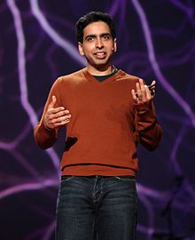

Salman Amin "Sal" Khan (born October 11, 1976) is an American educator who
founded the Khan Academy, a free online education platform and an organization
with which he has produced over 6,500 video lessons teaching a wide spectrum of
academic subjects, mainly focusing on mathematics and sciences.
As of October 2016, the Khan Academy channel on YouTube has more than 2.8
million subscribers and the Khan Academy videos have been viewed more than 840
million times.In 2012, Time named Salman Khan in its annual list of the 100 most
influential people in the world. Forbes magazine featured Khan on its cover with
the story "$1 Trillion Opportunity.
alman Khan was born to Muslim parents in Metairie, Louisiana. His father, Dr.
Fakhrul Amin Khan, is from Barisal, Bangladesh and his mother, Masuda Khan, is
from Murshidabad, West Bengal, India.
Khan attended the public school Grace King High School in Metairie, Louisiana,
where, as he recalls, "a few classmates were fresh out of jail and others were
bound for top universities."
Khan was motivated even at a young age to help other people learn.
Khan attended the Massachusetts Institute of Technology, graduating with
Bachelor of Science degrees in mathematics, electrical engineering, and computer
science in 1998, later getting his Master of Science in electrical engineering
and computer science. Khan was class president in his senior year.
Khan also holds a Master in Business Administration from Harvard Business
School.
In 2002, Khan was a summer intern at PARC. From 2003 to late 2009, Khan worked
as a hedge fund analyst at Connective Capital Management.
In late 2003, Khan began tutoring his cousin, Nadia, in mathematics over the
internet using Yahoo!'s Doodle notepad. When other relatives and friends sought
his tutoring, he moved his tutorials to YouTube where he created an account on
November 16, 2006.
The popularity of his educational videos on the video-sharing website prompted
Khan to quit his job as a financial analyst in late 2009. He moved his focus to
developing his YouTube channel, Khan Academy, full-time with the aid of close
friend Josh Gefner. Khan consequently received sponsorship from Ann Doerr, the
wife of John Doerr.
His videos received worldwide interest from both students and non-students, with
more than 458 million views in the first number of years.
Khan outlined his mission as to "accelerate learning for students of all ages.
With this in mind, we want to share our content with whoever may find it
useful." Khan plans to extend the "free school" to cover topics such as English.
Khan's videos are also used to educate rural areas of Africa and Asia.
Khan published a book about Khan Academy and education goals titled The One
World Schoolhouse: Education Reimagined.
Khan Academy, initially a tool for students, added the Coach feature in 2012,
promoting the connection of teachers with students through videos and monitor
tools.